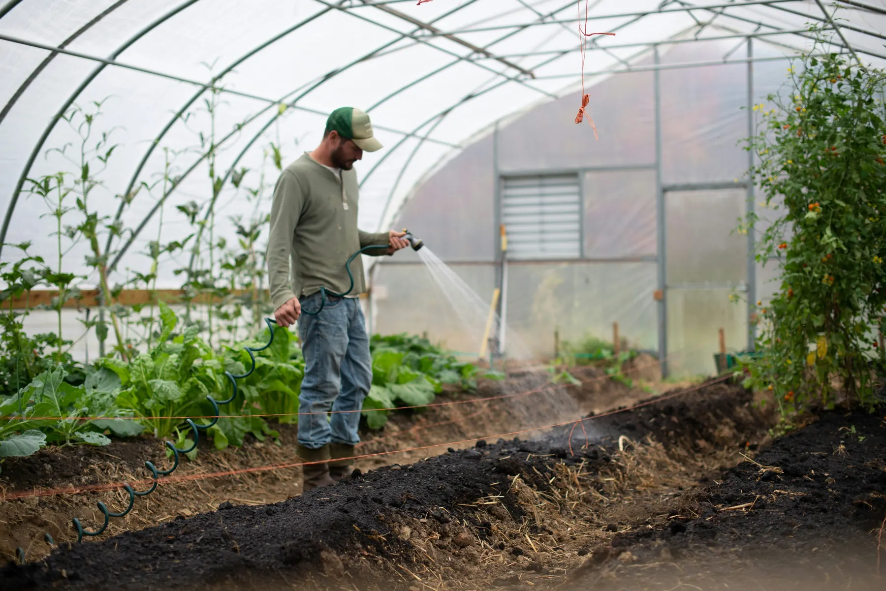

Supply resilience
August 2026
From farm variance to stew certainty
Ingredient variance is normal. Treating its downstream effects as a surprise is a management choice.

A vegetable does not read the annual plan. Beef does not seek approval before becoming more expensive. Yet organizations continue to treat field-level variance as though it should politely disappear by the time it reaches the production floor.
Map the conversion points
Resilient stew operations identify the places where a small change in the field becomes a large change in the bowl. These conversion points may involve yield, timing, texture, transport, or a person making an undocumented adjustment because it "looked right."
The task is not to eliminate variance. It is to establish where variance is absorbed, where it is passed on, and where it requires a decision above the level of an ordinary Tuesday.
Certainty is designed
Leading operators maintain alternate supply pathways, define tolerances in advance, and rehearse the conversations they hope not to have. This is sometimes called contingency planning. In the stew context, it is the difference between an orderly response and a very large pot of explanation.